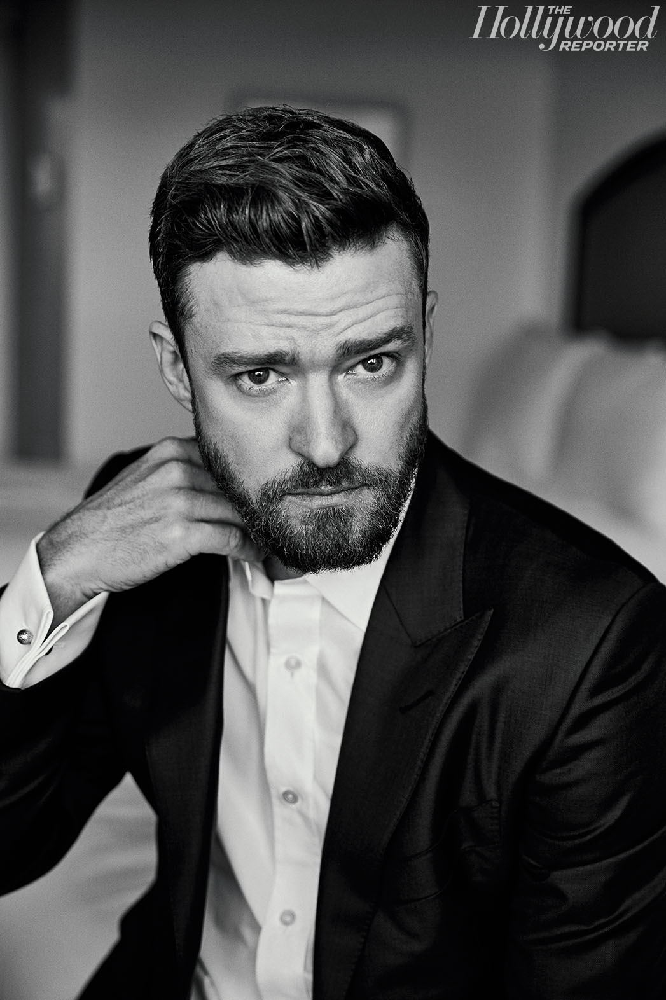
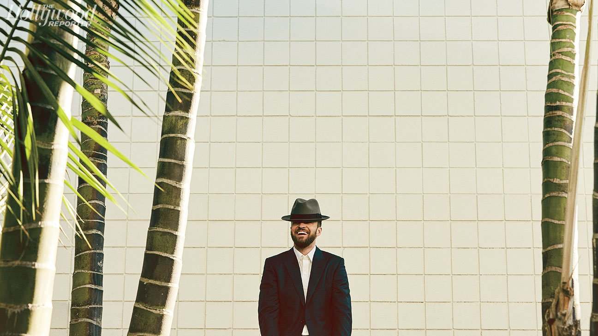
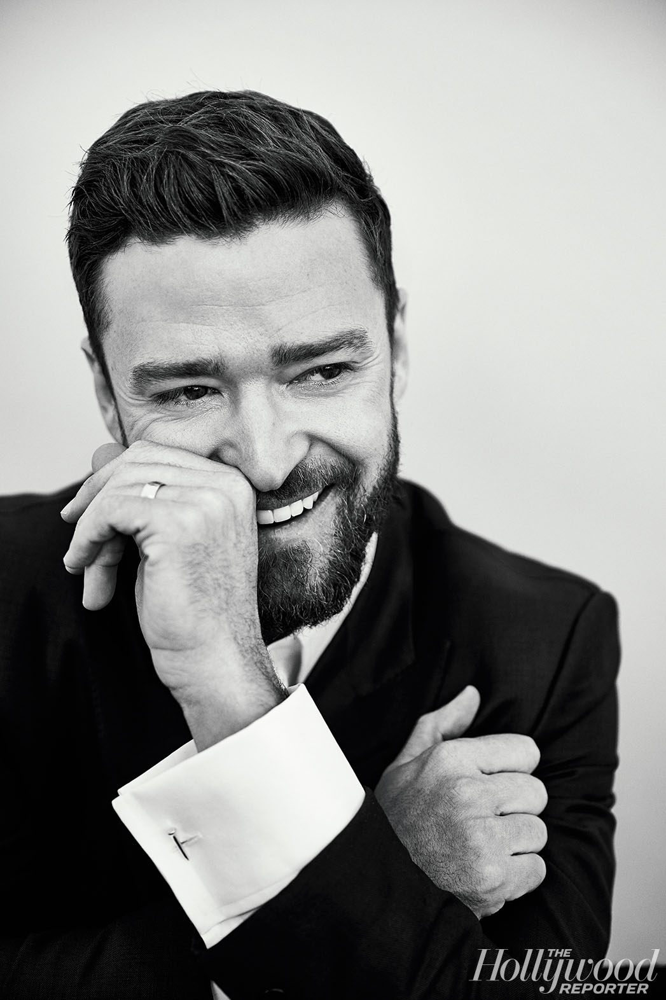
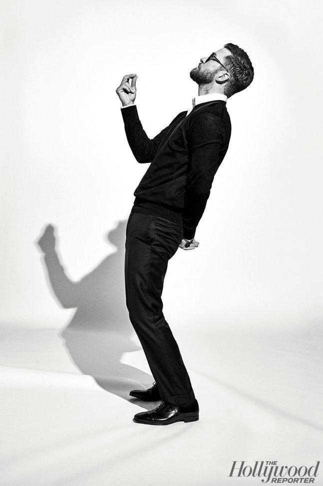
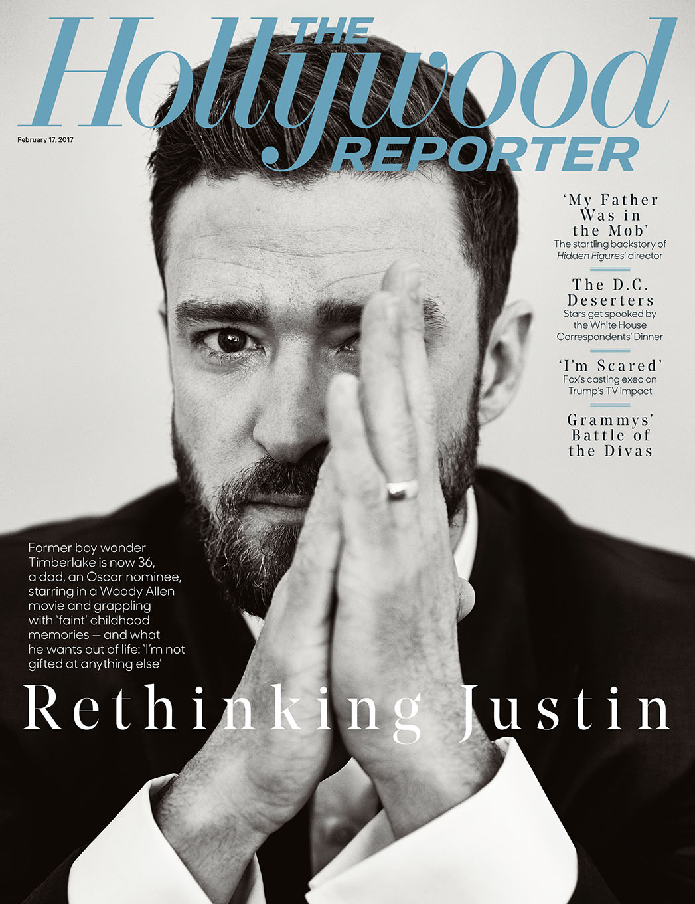

Justin Timberlake on Fatherhood, His Uncertain Future and Being Best Friends With Jimmy Fallon
by Benjamin Svetkey | February 08, 2017, 6:00am PST
With his first No. 1 single in a decade — that inescapable 'Trolls' tune, up for a Grammy and an Oscar — the former boy band phenom is a dad starring in a Woody Allen movie and grappling with "faint" memories from a childhood of stardom he's not sure he would choose for his son: "I could teach him a lot about what not to do."
Justin Timberlake is remembering the very first time he got chased by a mob of shrieking teenage girls.
"I was about 15 or 16 years old," he says. "We'd just given a concert in Germany at a festival on this huge field. And we were in the tour bus afterward, driving on a dirt road, and I looked out the window and saw all these young, impressionable females running after the bus." He shrugs his shoulders and gets to the point of the story: "I think we can all agree that I did not have a normal childhood."
Twenty years later, at age 36, Timberlake is having an unusual adulthood as well. At the moment, he's lounging at a corner table at the bar in the Chateau Marmont, his still-babyish face half hidden behind a scruffy beard and a black wool cap. Timberlake has been so famous for so long — as the youngest member of the wildly successful 1990s boy band NSYNC, as a multiplatinum Grammy-winning solo artist (26 million albums sold) and, increasingly, as an accomplished screen actor (he'll be co-starring with Kate Winslet in Woody Allen's next movie) — that he's learned to wear his celebrity like a pair of comfy old hammer pants. Indeed, he only can barely recall a time when he wasn't dodging paparazzi and making headlines for things like dating Britney Spears (and making a music video about their breakup) and accidentally setting off Janet Jackson's "wardrobe malfunction" at Super Bowl XXXVIII (even today, not a topic he's eager to talk about).
"I have some faint images from my childhood," he says matter-of-factly, sipping a beer, "but no, I can't really remember not being famous."
Right now, in early February, as awards season reaches maximum velocity, Timberlake once again is in the news — his song "Can't Stop the Feeling!" has been nominated for an Oscar, the singer's first. He wrote the bouncy disco tune for DreamWorks Animation's November hit Trolls, in which he voices a gloomy troll named Branch who befriends Anna Kendrick's more upbeat Princess Poppy (it has grossed $339 million worldwide). But the song also was created as a gift to his (and wife Jessica Biel's) 2-year-old son, Silas. "I'd never have written it if it weren't for him," he says. Either way, the earworm took off on the charts to become Timberlake's first No. 1 single in 10 years, selling 2.4 million downloads (and streaming nearly 700 million times). For the few who impossibly haven't yet heard the number, there's an excellent chance he'll be singing it at the Oscars — "it's being negotiated," is all he'll say — though don't expect to see Timberlake at the Feb. 12 Grammys, which snubbed the tune for the big prizes and nominated it only for best song written for a visual media. Timberlake will be playing golf at Pebble Beach that weekend.
There aren't a lot of boy band singers who mature into grown-up pop stars. And there aren't a lot of pop singers who cross over to become bona fide movie stars. And there's pretty much only one who has come close to doing both. Timberlake has toured with Christina Aguilera and acted for David Fincher (The Social Network). He has sung duets with Madonna and starred in a Coen brothers film (Inside Llewyn Davis). He's been a Mouseketeer, a teen heartthrob, Cameron Diaz's love object (both on and off the screen), Jimmy Fallon's best friend (and best comedy partner), a political activist (at least he threw a fundraiser for Hillary Clinton) and very soon might well become an Oscar winner. The question now, of course — the one Timberlake says he's been asking himself a lot lately — is what does he most want to be next?

Lately, since the birth of his son, Timberlake's been rummaging more and more in those memories — and how, when he was 10, his childhood took its abrupt swerve toward the unusual. "You go through your life with your own traumas, big and small, and think, 'It's not that bad, I have a lot to be thankful for, my parents did the best they could,' " he says. "But then you have a child of your own, and suddenly it opens all the floodgates, and you're like, 'No, no, no! That childhood trauma really did f— me up!' "
When he was in fourth grade, he heard about an open call at a Memphis mall where talent scouts were looking for contestants for Ed McMahon's Star Search ("the original American Idol," Timberlake calls it). He sang his heart out and got flown with his mom to Orlando for a slot on the show. He ended up losing — he blames the Garth Brooks song he was coaxed by the producers into singing — but he was hooked. A year later, when 11-year-old Justin found out that Disney Channel was casting The New Mickey Mouse Club in Orlando, he persuaded his mom to take him back to Florida to audition. This time, he made the cut, which is how he ended up being castmates with future girlfriend Spears, Keri Russell and future tourmate Aguilera and bunking with 11-year-old Ryan Gosling, who spent a season of the show living with Timberlake and his mom ("We aren't the closest of friends, for whatever reason," says Timberlake nonchalantly when asked whether he has stayed in touch with the La La Land star) in what turned out to be the greatest incubator of preteen talent in Mouseketeer history.

"We were at the age when you just soak in everything," says Timberlake. "We were taking acting classes, music classes, dance classes. We were learning how coverage and editing and cinematography work. And being put in front of a live audience, learning how to engage the crowd to get a laugh. Honestly, it was like SNL for children."
Timberlake's smooth moves during the show's five seasons caught the eye of famed music producer (and, later, convicted embezzler) Lou Pearlman, who had just made a fortune launching Backstreet Boys and was seeking to replicate that feat. He offered 15-year-old Timberlake a spot in his latest boy band and, in 1996, NSYNC released its debut album. It was an overnight smash in Europe (especially Germany), and within a couple years the group was topping the charts in America as well with bubblegum hits like "I Want You Back" and "Tearin' Up My Heart." Before long, NSYNC was performing at the Super Bowl, the Olympics and the Oscars as well as recording tracks with such music legends as Elton John, Stevie Wonder and Michael Jackson. At one point during the late 1990s — around the time bandmembers started suing Pearlman for stealing from them (he died in 2016 in prison) — the group was selling nearly 2.5 million albums a week, eclipsing even The Beatles.

Technically, NSYNC never officially broke up; they announced a "hiatus" in 2002 and have rarely appeared together since. "We were on a stadium tour, and I just felt like the whole thing was too big," says Timberlake, explaining why he decided to bail. "It started as a fun snowball fight that was becoming an avalanche. And, also, I was growing out of it. I felt like I cared more about the music than some of the other people in the group. And I felt like I had other music I wanted to make and that I needed to follow my heart."
Timberlake followed his heart in public for the first time at the 2002 MTV Video Music Awards, performing his debut solo single, "Like I Love You." The song hit No. 11 on the Billboard Hot 100 chart, and his debut solo album, Justified, went on to sell 3 million copies, but what was really important about that VMA show was that it marked the start of one of the great bromances of recent pop culture history.
"I was hosting by myself for the first time, and Justin was performing by himself for the first time, so we really bonded that night," remembers Fallon, who was moonlighting from his job on Saturday Night Live to emcee the event. "Our dressing rooms were connected, and we were both pacing, trying to calm each other down. 'You're going to be great,' 'No, you're going to be great.' And we've just been pals ever since."
More than pals, they became a hugely popular comedy duo. When Timberlake hosted SNL for the first time in 2003, he and Fallon killed it with their "Barry Gibb Talk Show" skit, beginning a partnership with the show that would have Timberlake returning five more times as host (winning three Emmys for his appearances) and many other times for cameos (like that "Dick in a Box" digital short he made with Lonely Island's Andy Samberg, still among the most downloaded bits in Saturday Night Live history).
Aside from the junior sketch comedy he'd done on The New Mickey Mouse Club, Timberlake had acted only once, in a 2000 Disney TV movie called Model Behavior, playing a male fashion model who falls for a waitress (much eye-rolling at the mention of the title). But after his appearances on SNL, acting offers started falling into his lap. Nick Cassavetes cast him for a small role in his crime drama Alpha Dog, while Hustle and Flow director Craig Brewer put him in Black Snake Moan with Samuel L. Jackson. "How come I cast him? I saw him on Saturday Night Live!" says director Will Gluck, who hired Timberlake to star with Mila Kunis in the romantic comedy Friends With Benefits. "On SNL, he was so funny and natural and likable and encapsulated so many different characters. I just knew this guy was really good."
It's not known why exactly David Fincher became interested in Timberlake — maybe he's a fan of "Dick in a Box," too — but the Oscar-nominated filmmaker asked the singer to try out for the role of Napster founder Sean Parker in 2010's Facebook drama The Social Network. "I went in as the character," recalls Timberlake of his audition with Fincher and writer Aaron Sorkin that ultimately won him the part, his first dramatic role in a major, high-profile production. Timberlake's performance in the film caught a lot of folks in Hollywood by surprise — "From the moment he comes onscreen, he just claims it," gushes Jonathan Demme, who last year directed the Netflix concert film Justin Timberlake and the Tennessee Kids — and there even was talk of a best supporting actor Oscar. The nom didn't happen, but the film nonetheless widened the singer's acting options dramatically, helping him land leading parts in big films (like Bad Teacher, opposite ex-girlfriend Diaz) and prestige indie projects (like Joel and Ethan Coen's folk music drama Inside Llewyn Davis). As Timberlake succinctly puts it, "There are two parts to my acting career: before The Social Network and after."
Of course, for serious thespians, the ultimate status symbol remains a part in a Woody Allen movie, even if these days that honor is mixed with moral complications (Timberlake sidesteps the ethics: "I chose to not get into it — I really don't dive into any of that stuff with anybody"). Like all of Allen's productions, this one is shrouded in secrecy, and Timberlake is keeping his lips sealed. Although judging from photos leaked in the fall of Timberlake on the set in a lifeguard chair wearing a 1950s-style two-piece swimsuit, Coney Island may figure into the plot. In any case, for Timberlake, it's yet another step up a ladder he never imagined he'd find himself climbing. "I can't really say that doing a Woody Allen movie was ever on my bucket list," he says, "because I never even thought that doing a Woody Allen movie might be a possibility."

At this juncture of his career, Timberlake still is more pop star than movie star. He doesn't have his next film lined up after the Allen project — which wrapped in November — but he sure knows what his next album will be (even if it doesn't yet have a release date). He's been working on it for months, collaborating with Pharrell, Timothy Mosley (otherwise known as Timbaland) and producer Max Martin (who helped write "Can't Stop the Feeling!" and two of the other four original songs Timberlake penned for the soundtrack, which Timberlake also executive produced). In fact, just the other night, he was holed up in the studio, "caught up in a creative tornado," until three in the morning. "It sounds more like where I've come from than any other music I've ever made," he describes what he's been working on. "It's Memphis. It's Southern American music. But I want to make it sound modern — at least that's the idea right now."
Until now, Timberlake has toggled more or less at will between the worlds of music and film, occasionally melding both (he scored his wife's next movie, The Book of Love). After his second album, FutureSex/LoveSounds, went platinum in 2007, he put singing on hold and spent a few years focusing on his acting. Then, in 2013, he took a break from acting to resume singing, launching a two-year worldwide tour following the release of his third album, 20/20 (at $231 million, his highest-grossing tour to date). "I want to do both things," he says. "I really do idolize the golden era of Hollywood, when actors were required to sing and move. But I'm just following my gut in the decisions that I make about what I'm going to do next. I'm mostly just glad this is all working out because I really can't do anything else. I'm not gifted at anything else."
Lately, though, Timberlake's gut has been acting up, leaving him unsure whether he'll be spending his next few years more on movie sets or on tour buses. Part of it may just be age — he's not 16 anymore. "Going on tour is a circus," he says. "You set up the tents, you play the show, you tear the tents down and go on to the next place. It's like Groundhog Day. After the 125th show, you feel debilitated." Another part of his confusion may be post-election jitters: He and his wife were big Clinton supporters — they held their fundraiser at their L.A. home last summer (filling in for Leonardo DiCaprio after he canceled his) — and Timberlake, whose musical brand always has been exuberantly upbeat, still is trying to adjust his cultural antennae to the new world zeitgeist. "Everything feels divisive to me right now," he says. "Everything." Probably the biggest reason he's having difficulty deciding which way to steer his career, however, is the 2-year-old who inspired that disco song that put Timberlake back on top of the charts last year. "Watching him jump around to 'Can't Stop the Feeling!' starting to learn words because of that song — it's the best thing in the world," he says with a giant grin.

Like every new dad, Timberlake is struggling to make adjustments to the work-life balance. "At first, it broke me down," he admits. "Those first eight months felt like those old [Ed Sullivan] shows where people are balancing spinning plates on poles — except if you drop one, they die." Of course, kids also have a way of making parents re-evaluate their own past, of rethinking their own choices and wondering whether their children might find a better, easier, healthier way. "Would I want my child to follow my path?" contemplates Timberlake, pausing for a long swig of beer. "You know, I haven't been able to answer that question in my mind. If he wanted it bad enough, I suppose I could teach him a lot about what not to do."